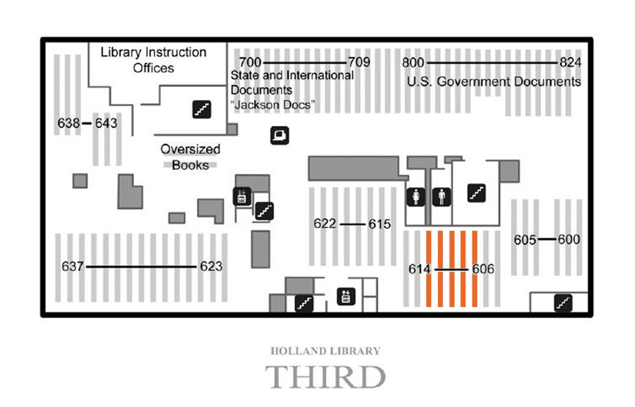

Mouse over the map of clickable areas to access images.

Stack #608-#612
Subclass PT German literature - Dutch literature - Flemish literature since 1830 -Afrikaans literature - Scandinavian literature - Old Norse literature: Old Icelandic and Old Norwegian - Modern Icelandic literature - Faroese literature - Danish literature - Norwegian literature - Swedish literature
Subclass PZ Fiction and juvenile belles lettres